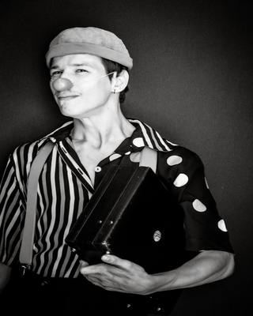
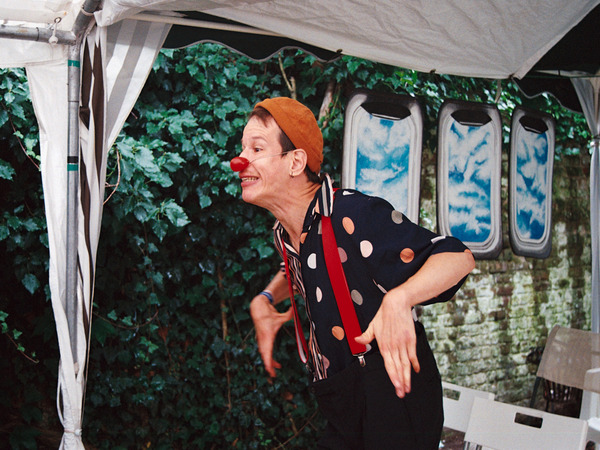
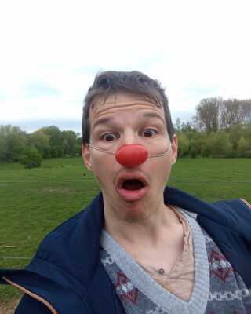

Mon parcours

Formation scénique
Cours
- Actuellement: cours de clown hebdomadaires animés tout au long de l’année académique par divers professionnels de l’art clownesque, Bruxelles
- Mars -avril 2023 : cours de clown hebdomadaires avec Carlos Bustamante (6 séances), Bruxelles
- Septembre - juin 2023 : cours de clown mensuels avec Catherine Gérard
- Albertine Bouldegum
 , Braine-l'Alleud
, Braine-l'Alleud - Septembre 2020 - juin 2022: cours hebdomadaires de clown avec Carina Bonan - Zirk Théâtre , Bruxelles
- Années académiques 2013/2014 & 2014/2015 : cours hebdomadaires de clown avec Françoise De Gottal - UP- Circus & Performing Arts (anc.Espace Catastrophe) , Bruxelles
- Année académique 2012/2013:
cours d’improvisation théâtrale avec Jean-Marc Cuvelier- UP- Circus & Performing Arts (anc.Espace Catastrophe) , Bruxelles
- Années académiques 2009/2010 & 2010/2011 : : Cours de théâtre avec Anthony Scott, Juan Marquez Garcia et Laure Cavalléra. Représentation à la clef en fin d’année académique.
- Année académique 2006/2007: Cours de théâtre avec Valérie D'hondt. Représentation à la clef en fin d’année académique , Bruxelles
Stages
- Mars 2024 : stage clown & tango (Milonga) avec Bart Walter et Joy Winistoerfer Clownsense , Bruxelles
- Janvier 2024: retraite clown avec Bart Walter Clownsense , Marbehan
- Novembre 2023 : stage clown & tango (Valse) avec Bart Walter et Joy Winistoerfer Clownsense , Bruxelles
- Juin 2022: stage clownesque avec Maria Cavarretta
- 2008-2010: stages de théâtre durant les vacances de Pâques animés par Valérie D’Hondt, Juan Marquez Garcia et Laure Cavalléra avec représentations en fin de stage. Cap Idéal ASBL , Wezembeek-Oppem

Retour en haut
Representations
Conférence clownesque sur l'(a)normalité
- Décembre 2023 : Lundynamite , Bruxelles
- Septembre 2023: ERG , Bruxelles
- Juillet 2023: ERG , Bruxelles
- Juillet 2023: Be Equal Festival , Bruxelles
- Avril 2023 Maison de repos Les Azalées (Evere) , Bruxelles
- Mars 2023 : Festival du Handikap , Louvain-la-Neuve
- Février 2023 (deux soirs): Cartes blanches du Festival Universatil (Thêatre Universitaire de Louvain-la-Neuve , Bruxelles Louvain-la-Neuve
- Septembre 2022 : Festiwhalll , Bruxelles
- Juin 2022 : séance de rôdage Jangada , Bruxelles
Conférence clownesque sur ce qui empêche
- Octobre 2023: Jobday Diversicom , Bruxelles
- Juin 2023: anniversaire privé, Bruxelles
- Mars 2022 : représentation auprès d’Enfants du Forum Koekelbergeois (soutien scolaire, animations et stages durant les vacances scolaires), Bruxelles
- Mai 2021 : Soirée échanges chez Sillex ASBL , Bruxelles
- Février 2020 : Try Art Café, Bruxelles
- Juin 2018: Soirée Jangada Got's Talent , Bruxelles
- Mai 2018 : anniversaire des Pilotis ASBL, Bruxelles
- Juin 2015: fête de l'AMO Itinéraires , Bruxelles
- Février 2015 : Exposition sonore "Dis Mille Vies" du Collectif WOW, Bruxelles
- Décembre 2014 :fête de Noël de l'AMO Itinéraires , Bruxelles
- Juin 2014 : Soirée "A chacun ses étapes" de UP Circus & Performing Arts (anc.Espace Catastrophe) , Bruxelles
Out of the stage
- Actuellement: Blindcode , formation au web developpement dispensée par Eqla ASBL en partenariat avec Bruxelles-formation , Bruxelles
- 2022-2023 : expérience formatrice en accessibilité numérique chez Accessia , l'agence web inclusive d'Eqla, Bruxelles
- 2014-2020: diverses expériences dans le tourisme chez Holidaypride SPRL , Arts & Loisirs ASBL et Décalage ASBL : essentiellement tourisme adapté aux personnes en situation de handicap et communication, Bruxelles
- 2013-2016 : formation d'agent de voyages : obtention d'un certificat d'agent de voyages; et d'un certificat de gestion, EFP , Bruxelles
- 2012: obtention du CESS et du certificat de qualification " agant en accueuil et en tourisme", Insitut des Sacrés Coeurs, Waterloo
